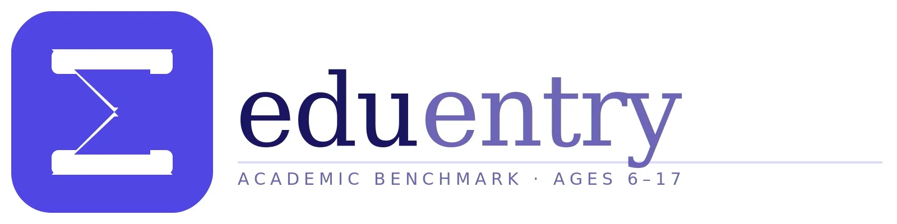

ABD'ye taşınan Türk ailelerle konuştuğumda en sık duyduğum soru şu: "Okul kalitesi mahallere göre bu kadar mı farklı?" Evet, çok farklı. Amerikan eğitim sistemini anlayan aileler ile anlamayanlar arasındaki fark büyük.
ABD'de ev kiralarken school district'i dikkate almayan aileler sonradan pişman olabiliyor. Özellikle New Jersey ve Massachusetts'te "iyi school district" ile "zayıf school district" arasındaki fark, özel okul kalitesindeki fark kadar büyük olabiliyor.
Amerikan Okul Sistemi: K-12 Yapısı
ABD'de zorunlu eğitim yaklaşık 5-6 yaşında başlar ve 17-18 yaşına kadar devam eder. Bu yapı K-12 olarak adlandırılır:
Elementary School (İlkokul) — K-5. Sınıf (5-11 Yaş)
Kindergarten ile başlayan ve 5. sınıfa kadar devam eden bu kademe Türkiye'deki ilkokula karşılık gelir. Amerikan ilkokullarında çocuk odaklı, aktivite bazlı bir öğretim anlayışı hâkim. İngilizce bilmeyen çocuklar için ELL (English Language Learner) desteği bu kademede en kritik.
Middle School (Ortaokul) — 6-8. Sınıf (11-14 Yaş)
Türkiye'nin ortaokul dönemine denk gelen bu kademe ABD'de geçiş dönemi olarak görülür. Sosyal uyum, arkadaş çevreleri ve kimlik gelişimi açısından kritik. Akademik baskı elementary'e göre artar ama high school'a göre daha az.
High School (Lise) — 9-12. Sınıf (14-18 Yaş)
ABD'nin üniversite hazırlık kademesi. 4 yıl sürer, Freshman-Sophomore-Junior-Senior olarak anılır. 11. ve 12. sınıflarda AP dersleri ve SAT/ACT sınavları üniversite başvurusunu belirler. Bu dönemin stratejik yönetimi Ivy League veya top-tier üniversite kabulü için kritiktir.
ABD'de Okul Türleri
Public School (Devlet Okulu)
Tüm ABD sakinleri için ücretsiz. Adrese göre bölge okulu atanır. Kalite school district'e göre çok değişir: Massachusetts, New Jersey, Connecticut'ın bazı bölgeleri en iyi public school'lara ev sahipliği yaparken, bazı şehirlerin iç bölgelerinde kalite düşük olabilir.
Charter School
Devlet finansmanlı ama özel yönetimli okullar. Genellikle daha küçük sınıflar ve daha yoğun akademik program. Ücretsiz ama lottery (kura) ile alım yapılıyor — yerine göre bekleme listesi uzun. KIPP, Uncommon Schools gibi zincirler tanınmış örnekler.
Private School (Özel Okul)
Yıllık 20.000–60.000+ USD ücretle çalışan bağımsız okullar. Phillips Academy (Andover), Phillips Exeter, Groton, Hotchkiss gibi okullarda üniversite kabulü olağanüstü güçlü. Boarding (yatılı) seçenekleri de mevcut. Türkiye'deki yurt dışı okul hedefli aileler bu okulları değerlendirebilir.
Magnet School
Belirli bir alan veya yaklaşıma (STEM, sanat, dil) odaklanan public school'ların özel programı. Bölge sınırı olmadan başvurulabiliyor; kabulde test veya portfolyo değerlendirmesi var. Thomas Jefferson High School for Science and Technology (Virginia) bu kategoride dünya çapında ün kazanmış.
- Tüm çocuklar için yasal hak ve ücretsiz
- ELL desteği yasal zorunluluk — Türkçe anadilli çocuklar için güvence
- Çeşitli müfredat dışı aktiviteler (spor, müzik, kulüpler)
- İyi school district'lerde üniversite hazırlık kalitesi yüksek
- Kalite school district'e göre dramatik farklılıklar gösterir
- Adres seçimi kritik — taşınmadan önce district araştırın
- Ivy League hedefliyorsanız AP ve extracurricular planlama erken başlamalı
- Türkçe destekli eğitim yok — ayrıca çalışmak gerekiyor
AP Dersleri ve Üniversite Hazırlık
ABD'de üniversite başvurusu çok boyutlu: SAT/ACT notları, GPA (not ortalaması), AP dersleri, extracurricular aktiviteler (spor, sanat, gönüllü çalışma) ve essays (kişisel denemeler). Türkiye'deki gibi tek bir sınava dayalı değil.
- AP (Advanced Placement): High school'da üniversite düzeyi dersler. 5 üzerinden 4-5 alan öğrenciler üniversitede kredi kazanabiliyor. Ivy League başvurularında 8-12 AP dersi tipik.
- SAT: Matematik ve okuma/yazma, 1600 üzerinden. Harvard, MIT, Caltech için 1500+ skor rekabetçi.
- ACT: SAT'a alternatif, 36 üzerinden. 33+ üst üniversiteler için güçlü.
- GPA: Lise notlarının ortalaması, 4.0 skala üzerinden (bazı okullarda AP için 5.0'a kadar ağırlıklı).
ABD'de Amerikan müfredatı ve AP dersleri hakkında daha fazla bilgi için Dubai ekseninde hazırladığımız yazıya da bakabilirsiniz — müfredat açıklamaları aynı geçerli.
ABD'de Türk Topluluğu ve Türkçe Eğitim
ABD'de yaklaşık 500.000–600.000 Türk kökenli vatandaş ve yerleşik yaşıyor. En yoğun topluluklar:
- New Jersey: Paterson, Clifton ve Passaic County — en büyük Türk topluluklarından biri. Türk restoranları, market ve dernek ağı güçlü.
- New York: Brooklyn, Queens ve Manhattan'da dağınık ama aktif topluluk.
- Houston, Texas: Önemli Türk-Amerikan nüfusu, Türk-Amerikan dernekleri aktif.
- Los Angeles: Batı yakasında Türk topluluğunun merkezi.
Bu şehirlerde hafta sonu Türkçe dil ve kültür programları düzenleniyor ama MEB okulu yok. Türkçeyi korumak için evde dil rutini ve online özel dersler en pratik yol.
ABD'de Okul Kaydı: Adım Adım
- School district'i araştırın: GreatSchools.org veya Niche.com gibi sitelerden bölgedeki okulların değerlendirmelerini inceleyin.
- İkamet adresini belirleyin: Hedeflediğiniz school district'te ikamet edin — kiralık ev veya satın alma fark etmez.
- District kayıt ofisine başvurun: İkamet kanıtı (utility bill veya lease agreement), kimlik ve aşı kayıtları gerekiyor.
- ELL değerlendirmesi: İngilizce yeterliliği test ediliyor; yetersizse ELL programına yönlendirilir.
- AP ve extracurricular plan: High school'dan itibaren üniversite hedefine göre ders ve aktivite planlaması yapın.

Çocuğunuzun akademik seviyesini Amerikan okul standartlarıyla karşılaştırın
AP derslerine hazır mı? Hangi grade level'da başlamalı? Eduentry'nin adaptif testi 60-90 dakikada net bir profil çıkarıyor.